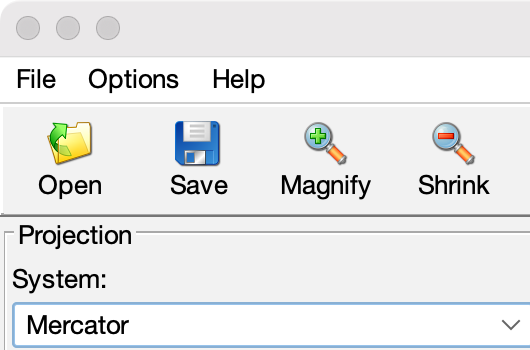

To open a file, use the File|Open menu item or click Open on the toolbar:

CoastWatch HDF or NetCDF 3/4 product files may be opened to read the master parameters, or a previously saved CoastWatch HDF master file generated from the tool. Once the file has been selected and opened, the master view and parameters are updated to show the new master region.
To save the current master parameters, use the File|Save menu item or click Save on the tool bar. The current master parameters are saved to a new CoastWatch HDF master file, overwriting an existing file if one exists. The saved file contains map projection and region parameters but no data variables.